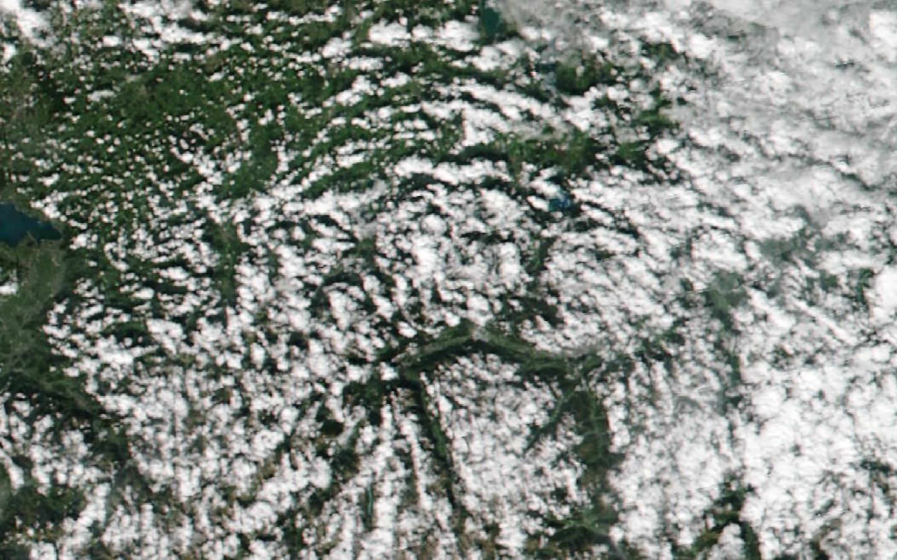
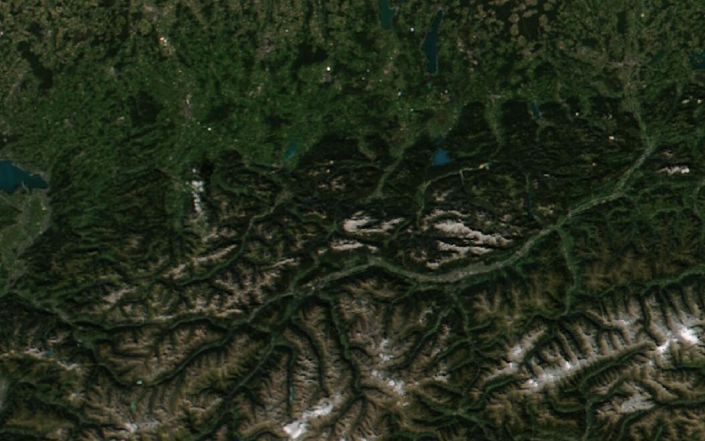
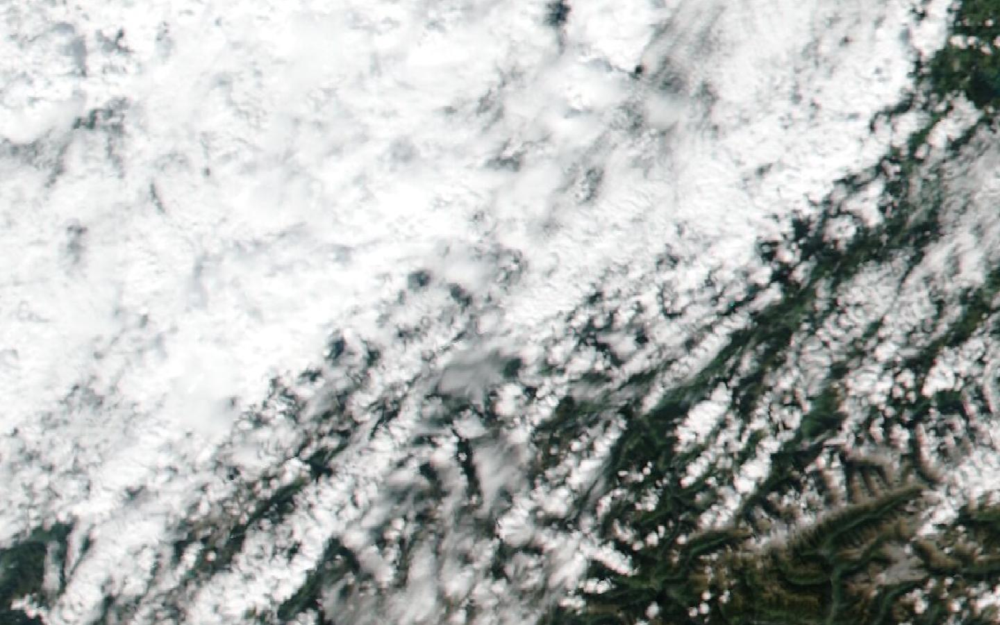
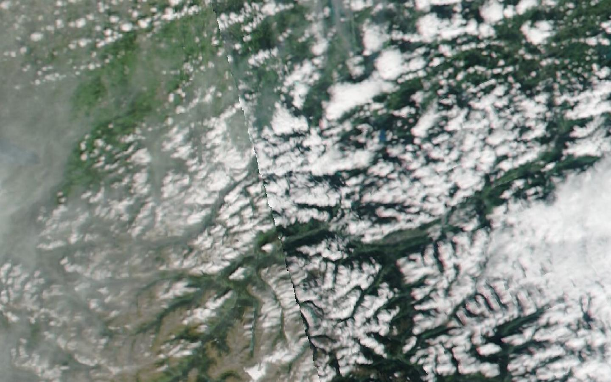
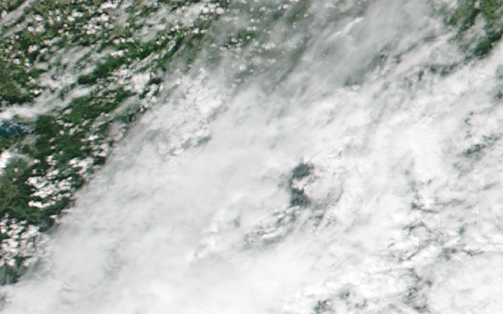
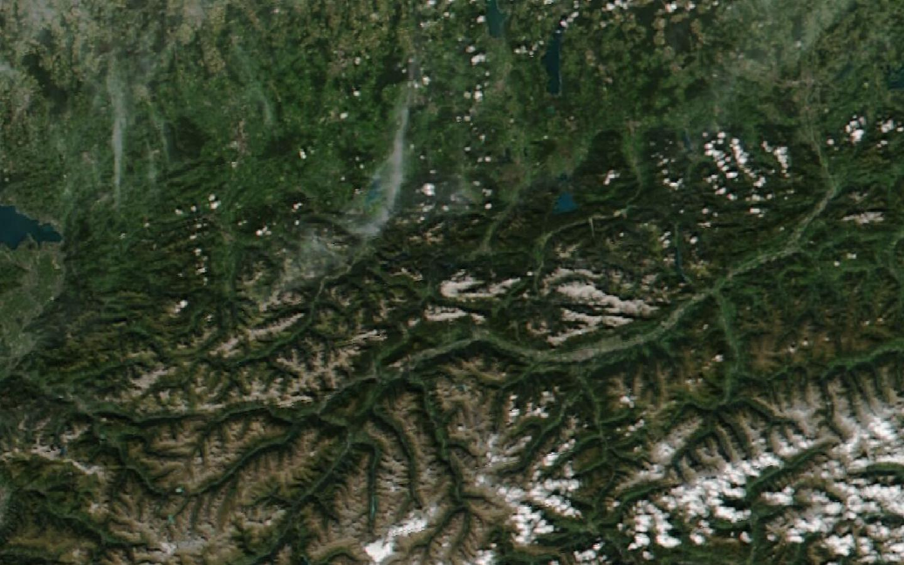
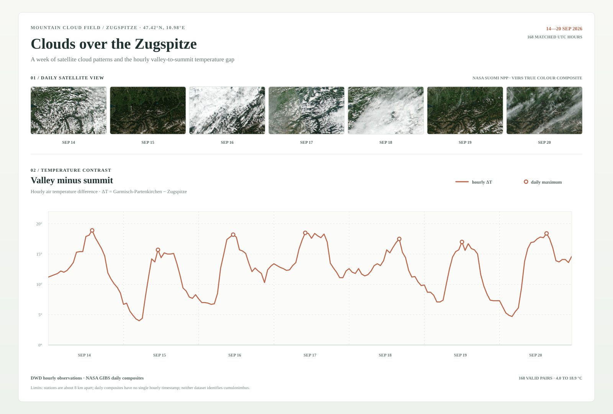
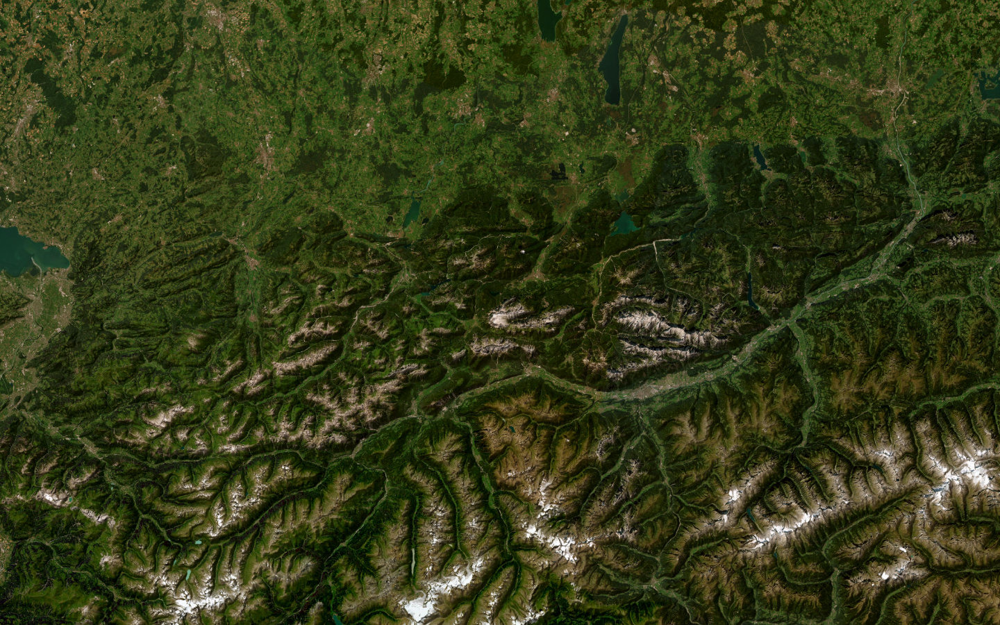

FIELD NOTE 01 / ZUGSPITZE · 14—20 SEP
山谷升温时，
山谷升温时，
云顶发生了什么？
一周卫星影像，168 组山谷与山顶的逐小时配对观测。两种视角，沿着同一片山地展开。
NASA VIIRS / DAILY COMPOSITE
当前画面：2026-09-20 · UTC 进入这一周 SCROLL TO OBSERVE
当前画面：2026-09-20 · UTC 进入这一周 SCROLL TO OBSERVE
01 / 04
14—20 SEP
14—20 SEP
七天，云场缓慢换形。
先看影像的变化，再对照山谷与山顶的温差。每一格是当天的 VIIRS 真彩色日合成；温差峰值会在正式版接入原始配对观测。








DWD FCI / 22 SEP · 13 FRAMES云顶高度参考层
[现有格网待接入]
[现有格网待接入]
这一幕沿用现有 44 × 99 CTH 格网与逐帧控制；底图日期未知，透明格点不代表晴空。
02 / 04
22 SEP · SEPARATE SCAN
22 SEP · SEPARATE SCAN
另一日的云顶剖面。
CTH 产品采于 9 月 22 日。这是一段独立参考观测，与前一周的 VIIRS 影像并列阅读，不叠成同期场景。
06:08—18:08 UTC · 13 OBSERVATION FRAMES